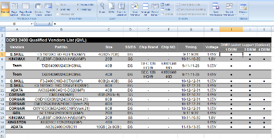
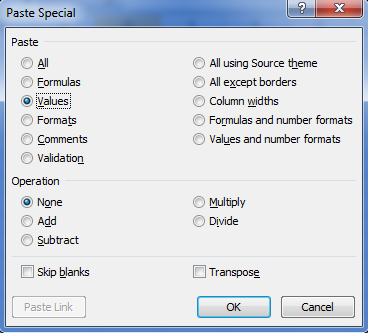
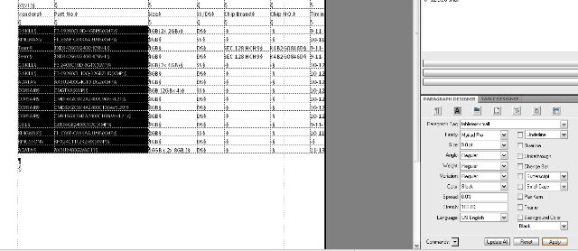
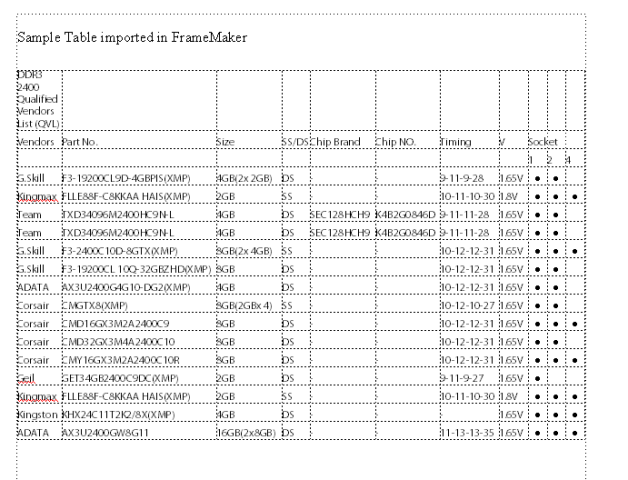

Importing and working with Excel tables in FrameMaker¶
Table of Contents
Despite improvements to table support in most applications, working with Excel tables in applications like Adobe InDesign, FrameMaker and CorelDraw is less than ideal, especially if you are working on a deadline. In InDesign, most writers would import the Excel file as text and convert the content to a table and format the table and contents manually in a time consuming process. Other methods would involve converting the table/chart to a vector object in Adobe Illustrator or CorelDraw to take advantage of the flexibility of vector objects in page layout applications. The fastest way to import an Excel table to a document is to save the Excel table as a bitmap or PDF and Place/Import the PDF into FrameMaker or InDesign. Unfortunately, this method has similar limitations to converting the table to a vector object - the table loses its text properties and common text tasks such as copy and paste are no longer available once the document is exported to PDF for editing, review, or publication.
FrameMaker’s table handling has advantages over Adobe InDesign’s WYSIWYG approach, but learning Table Designer and FrameMaker’s different interface can be trying for new users. This series of articles will discuss one way to import and format Excel articles for use in Adobe FrameMaker 10.
Preparing the Excel table¶
This example makes use of a Microsoft Excel 2007 table with numbers, text, and columns of varying widths.
To facilitate importing to FrameMaker, remove all formatting and colors. To avoid symbol or font issues, the bullets in the last three columns were formatted using a generic font, as is the rest of the text.
A quick way to remove table formatting is to select all the table cells, copy, and paste the cells in a new workbook using the Paste Special command. Select only Values and then save the workbook.
Preparing FrameMaker¶
Before starting work with tables in FrameMaker, change the display units of the ruler. Since FrameMaker isn’t a WYSIWYG application, you will have to manually input values for the table column widths and rows.
To change the Ruler display units:
Click View > Options.
In the Display Units item, select your preferred unit of measurement.
In the Rulers item, select your preferred unit of measurement.
Click Set.
When working with Excel tables, you would need both the Paragraph Designer and Table Designer tabs so you can open them before importing the Excel file.
Importing the plain Excel table¶
To import the Excel table:
Place the insertion point to where you want the table to appear.
Click File > Import.
Click File, then select the Excel 2007/2010 file.
Select Copy Into Document > Import.
Note
If you select the Import by Reference option, you would have to click the Convert button in the Text Inset Properties tab.
FrameMaker will display the Unknown File Type window for .xlsx files. Select Microsoft Excel 2007, then click Convert.
In the Import Text Flow by Reference window, select Reformat as Plain Text > Import.
The table will appear on your main Body Flow after the paragraph mark if your Text Symbols are visible. Note that most Excel tables are often wider than a typical A4 or Letter-size document in FrameMaker. The table will be cut off with parts of it not visible. In most cases, you would have to modify the content of the table in addition to resizing the columns and text sizes.
Note
Unlike InDesign, where you can toggle between views to display non-printing or hidden parts of the work page, you cannot see the missing portions of the table outside the FrameMaker document window.
Editing the Table of Contents, columns and text¶
To make the table fit the document window in FrameMaker, you would have to edit the text size, cell margins, and columns of the table. In this example, the table contains technical information that isn’t as necessary for most readers so a compromise between text size and column size was needed. However, check with your technical editor before making any direct edits to the text.
To change text size and font using Paragraph Designer:
Place the insertion point inside the table. The text is automatically formatted using the default Paragraph tag if you followed the import steps described in the previous section.
Create a new paragraph tag in Paragraph Designer. Click Commands > New Format > Create.
Change the text size and font. For this example, a size value of 9.0 pts is used.
Select the text/table cells and click Apply.
You can select the non-visible portions of the table once they appear on the document window. You can also refine formatting of the text later for specific types of text. The objective at the moment is to “shrink” the table and allow the missing portion of the table to appear.
Resizing the columns¶
If a significant portion of the table is still not visible, resize the columns to remove excess white space. You can shrink the column size tightly around the text or specify exact values for the columns.
Before starting, change the view so that the Text Symbols are not visible by clicking View > Text Symbols.
To maximise column space:
Place your mouse pointer inside a cell in the column you want to edit.
Click Table on the main toolbar, then Format > Resize Columns.
In the Resize Selected Columns window, select To width of Selected Cells’ Contents.
The column width will shrink tightly around the text. Note that you can modify the margins or the column size later.
To specify exact measurements of the column width:
Place your mouse pointer inside a cell in the column you want to edit.
Click Table > Format > Resize Columns.
Specify a value in the To Width: item.
Refining the Cell Margins using Paragraph Designer¶
If you used the To width of Selected Cells’ Contents option in the Resize Selected Columns window, you might find the text too closely spaced from cell to cell. To quickly add “cell padding” to make text readable, use the Paragraph Designer.
To adjust Cell Margins using the Paragraph Designer:
Click the Table Cell button in Paragraph Designer. Select the Paragraph tag you used for the table text.
Input margin values in the Cell Margin Top, Bottom, Left and Right items.
Click Apply or Update All.
Once all the columns are of the correct size and text within the cells are allotted enough space, check if all the contents of the Excel table are now visible. You may need to do a bit of trial and error especially if the content length for each cell varies.
In the following screenshot, the first column’s all caps text has been changed, the headings have been shortened, and the columns resized to extremely conservative values.
Now that all the columns of the Excel table are visible, you can now format the color, table headings, table lines and shading and merge cells.